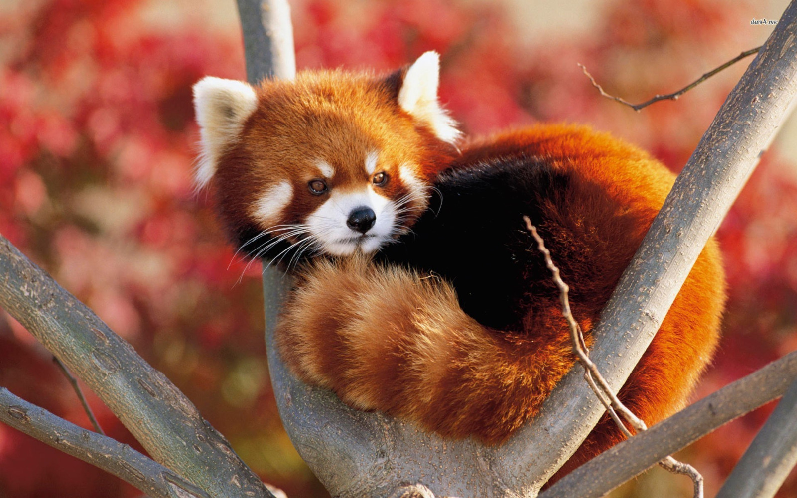

General
It is listed as Endangered on the IUCN Red List because the wild population is estimated at fewer than 10,000 mature individuals and continues to decline due to habitat loss and fragmentation, poaching, and inbreeding depression. Despite its name, it is not closely related to the giant panda.
The red panda has reddish-brown fur, a long, shaggy tail, and a waddling gait due to its shorter front legs; it is roughly the size of a domestic cat, though with a longer body. It is arboreal and feeds mainly on bamboo, but also eats eggs, birds, and insects. It is a solitary animal, mainly active from dusk to dawn, and is largely sedentary during the day. It is also called the lesser panda, the red bear-cat, and the red cat-bear.
The red panda is the only living member of the genus Ailurus and the family Ailuridae. It has previously been placed in the raccoon and bear families, but the results of phylogenetic analysis provide strong support for its taxonomic classification in its own family, Ailuridae, which is part of the superfamily Musteloidea, along with the weasel, raccoon and skunk families. Traditionally it was thought to consist of two subspecies. However, results of genetic analysis indicate that there are probably two distinct red panda species, the Chinese red panda and the Himalayan red panda, which genetically diverged 0.22 million years ago.
Red pandas are excellent climbers, and forage largely in trees. They eat mostly bamboo, and may eat small mammals, birds, eggs, flowers, and berries. In captivity, they were observed to eat birds, flowers, maple and mulberry leaves, and bark and fruits of maple, beech, and mulberry.
Like the giant panda, they cannot digest cellulose, so they must consume a large volume of bamboo to survive. Their diets consist of about two-thirds bamboo, but they also eat mushrooms, roots, acorns, lichens, and grasses. Occasionally, they supplement their diets with fish and insects. They do little more than eat and sleep due to their low-calorie diets.
Bamboo shoots are more easily digested than leaves, exhibiting the highest digestibility in summer and autumn, intermediate digestibility in the spring, and lowest digestibility in the winter. These variations correlate with the nutrient contents in the bamboo. Red pandas process bamboo poorly, especially the cellulose and cell wall components. This implies microbial digestion plays only a minor role in their digestive strategy. To survive on this poor-quality diet, they have to eat the high-quality sections of the bamboo plant, such as the tender leaves and shoots, in large quantities, over 1.5 kg of fresh leaves and 4 kg of fresh shoots daily. This food passes through the digestive tract fairly rapidly (about 2–4 hr) so as to maximize daily nutrient intake.
Conservation
The red panda is listed as endangered on the IUCN Red List since 2008 because the global population is estimated at about 10,000 individuals, with a decreasing population trend; only about half of the total area of potential habitat of 142,000 km2 (55,000 sq mi) is actually being used by the species. Due to its shy and secretive nature, and its largely nocturnal habits, observation of red pandas is difficult. Therefore, population figures in the wild are determined by population density estimates and not direct counts. It is protected in all range countries, and hunting is illegal. It is listed in CITES Appendix I.
Worldwide population estimates range from fewer than 2,500 to between 16,000 and 20,000 individuals, In 1999, the total population in China was estimated at between 3,000 and 7,000 individuals. In 2001, the wild population in India was estimated at between 5,000 and 6,000 individuals. Estimates for Nepal indicate only a few hundred individuals. Reliable population numbers are hard to find, partly because other animals have been mistaken for the red panda. For instance, one report from Myanmar stated that red pandas were still fairly common in some areas; however, the accompanying photographic proof of the "red panda" was in fact a viverrid species.
-
Conservation efforts are highly variable between countries:
- China has 35 protected areas, covering about 42.4% of red panda habitat.
- India has 20 protected areas with known or possible red panda populations in Sikkim, Arunachal Pradesh, and West Bengal such as Khangchendzonga, Namdapha and Singalila National Parks, and a coordinated conservation policy for the red panda.
- In Nepal, known populations occur in Langtang, Sagarmatha, Makalu Barun and Rara National Parks, Annapurna Conservation Area, Kanchenjunga Conservation Area, and Dhorpatan Hunting Reserve.
- Five protected areas in Bhutan support red panda populations.
- Myanmar has 26 protected areas, of which at least one hosts red panda populations.